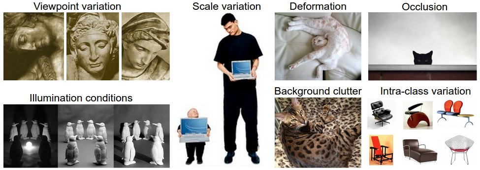
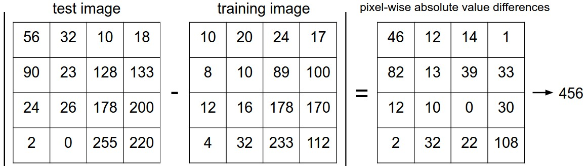

Image Classification: Data-driven Approach, k-Nearest Neighbor, train/val/test splits
目录
本讲义翻译自 cs231n:image-classification 1。主要目标给没有做过计算机视觉的 人，介绍一下图像分类和数据驱动的学习方法。
Image Classification
Motivation
图像分类(Image Classification)主要是对输入图像分到某一个类别的问题。该问题是计 算机视觉的一个核心问题，虽然比较简单，但是有很大应用场景。而且随着学习的深入，我 们可以看到其他的一些问题(目标识别、场景分割)也是基于图像分类来做的。
Example
例如：下图图示1显示了输入一个图像，对该图像分类，分到4个类别{cat,dog,hat,mug}。 如图所示，一个图像在计算机看来就是3维数组。如例子所示，该猫咪图像248像素宽，400 像素高，同时有3个颜色通道，分别为红色、绿色、蓝色（RGB）。因此，一个图像由 248*400*3个数字，总共297600个数字组成。每一个数字的范围为0（黑色）到255（白色）。 图像分类就是根据这些数字进行分类到某个标签，例如 'cat'。

图1 图像分类说明
Challenges
虽然图像分类任务相对人来说是一个比较简单的，但是对于计算机来说只是看到了一堆数字， 并不是非常简单。如下是计算机视觉在图像分类会遇到的一些挑战：
-
Viewpoint variation - 同一个对象，采取不同的视角进行拍摄，图像的最后变现具 有很大的变化
-
Scale varlation - 同一类对象，在现实中也不是完全一样大小的
-
Deformation - 很对对象可以具有很多形态
-
Occusion - 对象可以被遮挡，很多时候只会露出局部
-
Illumination conditions - 光照情况会极大的影响图像数组呈现的数值
-
Background clutter - 感兴趣的对象有可能和背景色相似，增加辨识难度
-
Intra-class variation - 即使是同一类对象，内部也会具有一定差异

图2 图像识别中的一些挑战
一个表现较好的图像分类模型需要能够克服如上的一些影响，保持类之间的分类性能。
- Data-driven approach
思考，如何去构建一个算法来对图像进行分类呢？这个算法并不像排序算法，因为并没有一 个很明确的算法过程可以保证图像正确分类。一大堆if-else语句？
因此，这里常常采取的方法类似教小孩子识别图像一样。获取大量的样本图像，然后开发一 个学习算法去学习这些样本图像。这个方法叫做： data-driven approach 。
图像分类的训练集如下图所示，每个类别里都要包含若干张图片。

图3 训练数据集
- The Image classification pipeline
图像分类可以抽象为输入一个像素数组，代表输入的图像；然后根据像素数组来分配一个或 多个类别。整体的流程如下：
-
Input - 输入为N个图像，并且每一个图像都有一个类别，分属于k类中的一个。 这些数据叫做训练集
-
Learning - 构建一个模型根据输入的训练集进行学习如何将像素数组分到不同的类别， 这个过程叫做 training a classifier
-
Evaluation - 最后，需要对这个训练的分类器进行评估。使用一个测试集，即这个集 合中的数据模型是没有使用来进行训练，根据预测的类别去评估效果。 这里的每个图像的真实类别叫做 ground truth
-
Nearest Neighbor Classifier
训练的第一个分类器叫做最近近邻分类器(Nearest Neighbor Classifier)。该分类器在 实际场景中基本不会得到应用，而且和卷积神经网络一点关系都没有，但是可以通过这个简 单的分类器先去学习一些图像分类的思想。
Example Image classification dataset: CIFAR-10
CIFAR-10 2 是一个较为简单的图像分类数据集。由60K 32*32像素的图像组成。总共有10类 的类别标签。下图是CIFAR-10的示例：

图4 CIFAR-10
左图：CIFAR-10不同类别下的图像示例；右图：第一列是一些测试图像，其他列是top-10最 近近邻的图像。
将CIFAR-10分为两部分，50K的用来作为训练集，每个列别具有5K的图像。剩下的10K图像作 为测试集。最近近邻分类器会对每一个测试集中的图像计算在训练集中的最近近邻图像，然 后测试图像的类别就标记为在训练集中的最近近邻图像的标签。
如何定义两张图像的距离呢？最简单的做法就是将两张图像逐像素的进行比较，然后对差值 加和即可。例如：两张图像表示为向量 I1,I2 ， L1 distance 如下公式：
\begin{equation} d_{1}(I_{1},I_{2}) = \sum_{p}{\lvert I_{1}^p-I_{2}^P \rvert} \end{equation}
图5 L1 distance
如图所示：逐像素进行距离计算，然后对这些差值加和，就是 L1 distance
那么如何实现最近近邻算法，首先需要准备训练集和测试集。
Xtr, Ytr, Xte, Yte = load_CIFAR10('data/cifar10/') # a magic function we provide # flatten out all images to be one-dimensional Xtr_rows = Xtr.reshape(Xtr.shape[0], 32 * 32 * 3) # Xtr_rows becomes 50000 x 3072 Xte_rows = Xte.reshape(Xte.shape[0], 32 * 32 * 3) # Xte_rows becomes 10000 x 3072
加载 CIFAR-10 数据集，获得4个数组：training data/label和test data/label。 Xtr 为训练集数组，数据维度为50K*32*32*3，对应的 Ytr 为训练集数据的类别，数据 维度为50K，并且数值在[0-9]。
接着训练和评估分类器：
nn = NearestNeighbor() # create a Nearest Neighbor classifier class nn.train(Xtr_rows, Ytr) # train the classifier on the training images and labels Yte_predict = nn.predict(Xte_rows) # predict labels on the test images # and now print the classification accuracy, which is the average number # of examples that are correctly predicted (i.e. label matches) print 'accuracy: %f' % ( np.mean(Yte_predict == Yte) )
accuracy 用来评估分类器在测试集上的分类效果。需要注意的是分类器一般都具有两个 API： train(X,y) 接受训练数据进行模型训练； predict(X) 接受新的数据进行分类。
如下是一个简单的最近近邻分类器实现，采取 L1 distance ：
import numpy as np class NearestNeighbor(object): def __init__(self): pass def train(self, X, y): """ X is N x D where each row is an example. Y is 1-dimension of size N """ # the nearest neighbor classifier simply remembers all the training data self.Xtr = X self.ytr = y def predict(self, X): """ X is N x D where each row is an example we wish to predict label for """ num_test = X.shape[0] # lets make sure that the output type matches the input type Ypred = np.zeros(num_test, dtype = self.ytr.dtype) # loop over all test rows for i in xrange(num_test): # find the nearest training image to the i'th test image # using the L1 distance (sum of absolute value differences) distances = np.sum(np.abs(self.Xtr - X[i,:]), axis = 1) min_index = np.argmin(distances) # get the index with smallest distance Ypred[i] = self.ytr[min_index] # predict the label of the nearest example return Ypred
L1 distance 的最近近邻算法在CIFAR-10上的准确性为 38.6% 。
The choice of distance
还有很多中距离度量函数，另外一个常用的距离度量为 L2 distance ，在几何学叫做 euclidean distance.计算公式如下：
\begin{equation} d_{2}(I_{1},I_{2}) = \sqrt{\sum_{p}{(I_{1}^p-I_{2}^p)^2}} \end{equation}使用 numpy 只需要修改一行计算距离的代码即可：
distances = np.sqrt(np.sum(np.square(self.Xtr - X[i,:]), axis = 1))
L2 distance 的最近近邻算法在CIFAR-10上的准确性为 35.4% ，略低于 L1 distance 。
K-Nearest Neighbor Classifier
最近近邻算法由于只考虑了一个最近样本的类别信息，在距离差距差不多的时候，容易形成 错分。所以可以多考虑 k 个最近的样本的类别信息进行分类，能够提高分类准确性，这种方 法叫做 k-Nearest Neighbor Classifier 。当 k=1 的时候就退化成了最近近邻算法。

图6 knn
NN和KNN算法的差别。二维数据，3个类别（红蓝绿），显示了不同区域所属于的标签区域。 可以看到NN算法中，会有一些异常点（绿色单点被蓝色包围）；在KNN中这些点的区域就显 得比较平滑，不会出现异常的检测区域。白色的区域就是无法判断的区域,例如最近的5个点 中，2个红色，2个绿色，1个蓝色，就是无法区分的情况。
一般情况都会使用KNN算法，来增加结果的可信度。那么，如何选择k值呢？
Validation sets for Hyperparameter tuning
k nearest neighbor classifier 需要设定一个 k 值。那么如何选择呢？其次，存在 这么多的距离计算函数： L1 norm，L2 norm等等。
这些选择叫做 超参(hyperparameters)，这些参数控制着模型的变现，并且没有一个指导标准 告诉我们应该选择什么样的超参。
一个比较实践的方法是：设置不同的超参，然后进行测试和评估，找到一组结果最好的作为 选择。这里需要注意的是，超参的选择使用的评估集不能是测试集(test dataset)。 主要原因是，超参的选择如果在测试集上进行评估，那么这时测试集可以看作是参超的训练 集，那么这样评估和训练都在测试集上进行，那么最后模型的超参选择很有可能对测试数据 过拟合(overfit)。
这里要记得一个准则：
测试集的测试只做最后一次，并且是在所有参数，包括超参都确定之后。
那么，如果不使用测试集来进行模型的超参调试呢？一样的道理，可以将训练集分为两个部 分：一个小规模的数据集，用来进行超参的调试，叫做验证集(validation set)。例如： CIFAR-10上，使用49K的数据进行训练；1k的数据用来验证，调整超参。
# assume we have Xtr_rows, Ytr, Xte_rows, Yte as before # recall Xtr_rows is 50,000 x 3072 matrix Xval_rows = Xtr_rows[:1000, :] # take first 1000 for validation Yval = Ytr[:1000] Xtr_rows = Xtr_rows[1000:, :] # keep last 49,000 for train Ytr = Ytr[1000:] # find hyperparameters that work best on the validation set validation_accuracies = [] for k in [1, 3, 5, 10, 20, 50, 100]: # use a particular value of k and evaluation on validation data nn = NearestNeighbor() nn.train(Xtr_rows, Ytr) # here we assume a modified NearestNeighbor class that can take a k as input Yval_predict = nn.predict(Xval_rows, k = k) acc = np.mean(Yval_predict == Yval) print 'accuracy: %f' % (acc,) # keep track of what works on the validation set validation_accuracies.append((k, acc))
这样，我们可以在最后画出不同 k 值下的准确率，使用该 k 值在测试集上进行最后的 测试。
将训练集进行切分出一个小的验证集，在验证集上去对超参进行调整。最后，使用调整后的 超参在测试集上进行测试，并得出性能评估报告。
Cross-validation
如果训练数据集本身就很小，那么一般需要使用交叉验证(cross-validation)来进行超参 的调整。将训练集分成N份，然后遍历的以1份作为验证集，其他N-1份作为训练集进行训练。 然后将准确性取平均作为最终的指标。
例如在CIFAR-10上做5-fold cross validation，来去k进行调参：

图7 knn-5-cross-validation
5折交叉验证，在不同的k值的情况下的准确性。可以看出在k=7的时候，准确性最高。
In practice
在实际中，如果交叉验证计算量较大，一般单独分割出一个验证集来作超参调参。一般取 50%-90%作为训练集，其它作为验证集。具体取的比例取决于调整的参数的数量是否比较大， 从而需要一个较大的验证集。如果验证集数量较少，最好还是需要做一下交叉验证。常规的 交叉验证为3-fold、5-fold或者10-fold。

图8 cross-validation
Pros and Cons of Nearest Neighbor classifier
NN算法的优点在于算法简单，通俗易懂，并且非常容易实现；此外，不需要训练，只需要对 训练数据进行存储即可。
NN算法的缺点在于预测的时候，需要遍历一遍训练集，在训练集较大的时候，需要大量的计 算量和内存存储。
很多时候，训练的时间和计算量没有太大的关系；反而，推断需要较为快速。
为了克服NN算法在推断的时候需要遍历计算的缺点，有很多近似近邻算法发明 (Approximate Nearest Neighbor(ANN))和lib库用来加速近邻查找(FLANN和FAISS)。这些 算法大多基于 kdtree 或者 kmeans 聚类后进行加速计算。
如果数据维度较少的时候，NN算法是一个较好的选择。但是实际中，很多数量都具有比较高 的维度，计算两个数据之间的距离对维度较为敏感。下图 L2 distance 都一样的图像。

高维度基于像素间的距离计算并不是非常直观。原图(左图)和三个不同的图像之间的L2距离 一样。显然，基于像素间的距离计算并能很好的度量图像之间的不同。
下图是根据L2距离进行图集可视化，距离相近的图像在下图中较为相近。

从图中，可以看出NN算法会将相似颜色分布的图片放在一起，或者背景颜色相近的归为一类。 并没有考虑图像中的语义信息。后续讲义将不直接依赖于像素进行分类。
Summary: Applying kNN in practice
如果真的需要采取kNN模型进行分类任务，如下有一些实践优化：
-
对数据进行预处理 - 对数据集进行归一化处理
-
对数据进行降维 - 采取降维算法对高维原始数据进行降维，例如PCA（cs229, wiki) 或者随机映射(Random Projection)
-
采取近似近邻算法 - 如果kNN运行时间太长，考虑使用近似近邻算法